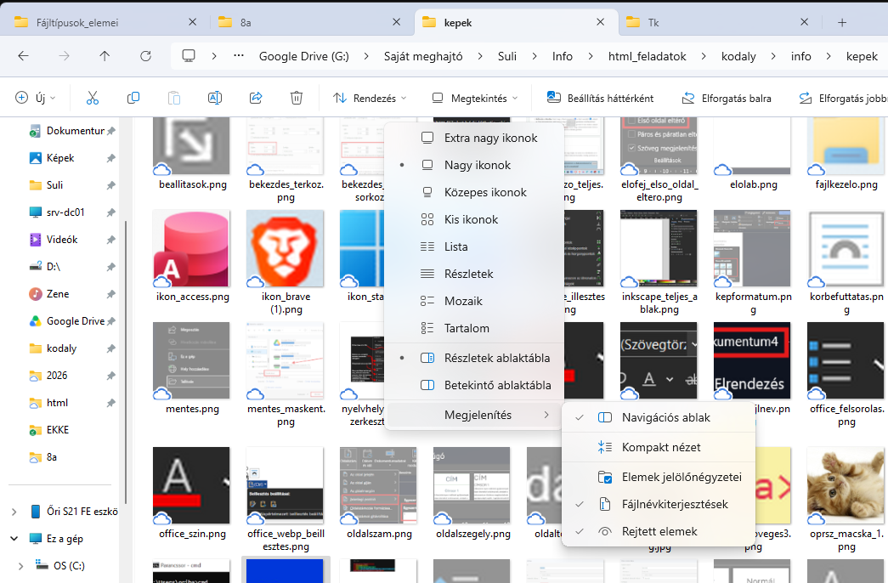
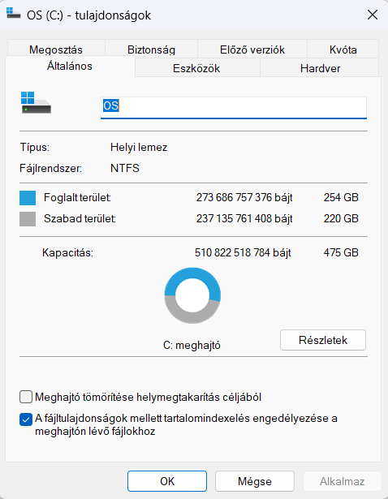

Ahhoz, hogy egy számítógépet ne csak „nyomogass”, hanem valóban értsd és urald, három dolgot kell átlátnod: mi dolgozik a gépházban (hardver), milyen formában tároljuk az adatokat (fájlok és kiterjesztések), és hogyan irányíthatod mindezt villámgyorsan (operációs rendszer).
Egy kis segítség: ha így formázott részt látsz, arra rákattintva extra magyarázat vagy kép jelenik meg.
Hardvernek nevezzük a számítógép minden fizikai, megfogható alkatrészét, szoftvernek pedig a rajta futó programokat és adatokat. A mai gépek túlnyomó többsége a Neumann-elvek alapján működik, ahol a központi egység a memóriából olvassa ki a programokat és az adatokat is.
| Alkatrész | Feladata | Főbb jellemzői (Mire figyelj vásárláskor?) |
|---|---|---|
| Alaplap (Motherboard) | A gép „idegrendszere” és gerince: összeköti az összes alkatrészt egymással, és elosztja köztük az áramot. | Foglalat (Socket): meghatározza, milyen CPU megy bele. Csatlakozók: PCIe, M.2, SATA, USB portok száma. |
| Processzor (CPU) | A gép „agya” (Központi Feldolgozó Egység). Végrehajtja a programok utasításait és a matematikai műveleteket. | Órajel (Hz): hány műveletet végez másodpercenként. Manapság jellemzően 3.0–5.0 GHz közötti, vagyis 3-5 milliárd művelet másodpercenként. Magok és szálak száma (Cores/Threads): hány feladatot tud valóban párhuzamosan végezni (pl. 8 mag / 16 szál). |
| Memória (RAM) | Ideiglenes, szupergyors munkaterület az éppen futó programoknak és megnyitott fájloknak. | Kapacitás (GB): ma 16–32 GB az ideális. Típus és sebesség: DDR4, DDR5 (a korábbiak ma már elavultak!). Felejtő (volatilis) tároló: áram nélkül azonnal elveszíti a tartalmát! |
| Videókártya (GPU) | A képi megjelenítésért, 3D grafikáért, videóvágásért és ma már a mesterséges intelligencia (MI) számításokért felel. | Integrált (IGP): a processzorba van építve, irodai munkára és filmnézésre tökéletes, keveset fogyaszt. Dedikált (önálló kártya): saját memóriája (VRAM) és hűtése van; játékokhoz, 3D tervezéshez elengedhetetlen. |
| Tápegység (PSU) | A konnektorból érkező váltóáramot alakítja át a gép alkatrészeinek megfelelő, stabil egyenárammá. | Teljesítmény (Watt, W): pl. 650 W. Hatásfok (80 Plus minősítés): megmutatja, mennyi áram vész el hő formájában. |
A háttértárak nem felejtik el az adatokat kikapcsoláskor sem. A technológia azonban hatalmasat fejlődött:
| Jellemző | HDD (Merevlemez) | SATA SSD | M.2 NVMe SSD |
|---|---|---|---|
| Működési elv | Mágneses, gyorsan forgó lemezek és mozgó olvasófej. | Flash memória (nincs mozgó alkatrész), régi SATA kábelen. | Flash memória, közvetlenül az alaplap gyors PCIe sínjére csatlakozik. |
| Sebesség (Olvasás) | Lassú (~100–200 MB/s) | Gyors (~500–550 MB/s) | Villámgyors (~3500 – 7500+ MB/s) |
| Ütésállóság és zaj | Érzékeny az ütésre (ha leesik, tönkremehet), zúg és kattog. | Teljesen néma, ütésálló. | Teljesen néma, ütésálló, rágógumi méretű. |
| Mire érdemes használni? | Olcsó adattemetőnek (filmek, biztonsági mentések tárolására, sok TB-os méretben). | Régebbi gépek, laptopok felgyorsítására. | Modern gépekben az operációs rendszernek és a programoknak/játékoknak. |
A központi egységhez csatlakozó külső eszközöket perifériáknak hívjuk, és az adatáramlás iránya szerint 3 csoportba soroljuk őket:
Minden fájl egy névből és egy – ponttal elválasztott – kiterjesztésből áll: FÁJLNÉV.KITERJESZTÉS. A kiterjesztés mondja meg az operációs rendszernek és a programoknak, hogy milyen típusú adat van a fájlban, és melyik programmal kell megnyitni (pl. a .docx-et a Worddel, az .mp3-at a lejátszóval).
⚠️ Szabályok és veszélyek a fájlnevekkel kapcsolatban
.htm és .html, vagy .jpg és .jpeg). Ma már nincs ilyen korlát.kép.jpg fájlt egyszerűen átnevezel kép.pdf-re, attól a belseje nem alakul át PDF-fé, csak elrontod a fájlt! Átalakításhoz a Mentés másként (F12) vagy az Exportálás funkciót kell használni. .webp kiterjesztéssel rendelkezik, azt átnevezéssel átalakíthatod .png-re. Erre azért lehet szükség, mert sok program nem ismeri az újabb képformátumokat.\ / : * ? " < > |. A teljes elérési út ne legyen 255 karakternél hosszabb!cím.docx és a CÍM.docx ugyanannak a fájlnak számít (nem lehetnek egy mappában). Linux és webszerverek alatt viszont két külön fájlnak számítanak!doksi1.docx rossz név. Helyette használj ilyet: 2026_okt_tortenelem_essze_Nevem.docx!nyeremeny.pdf.exe nevű vírust. Ha a kiterjesztés rejtve van, te csak annyit látsz, hogy nyeremeny.pdf, rákattintasz, és máris elindítottál egy futtatható vírust!

A képek két nagy világra oszlanak: a rasztergrafikus (pixelalapú) képek apró színes négyzetekből (képpontokból) állnak, így ha belenagyítasz, „kockásodnak” (pixelesednek). A vektorgrafikus képek matematikai görbéket és alakzatokat tárolnak, így végtelenül nagyíthatók minőségromlás nélkül!
| Kiterjesztés | Típus és tömörítés | Jellemzők és használat |
|---|---|---|
| ⭐ .jpg / .jpeg | Raszteres, veszteséges | [KÖTELEZŐ] A legelterjedtebb fotóformátum. Kis fájlméret, de nem tud átlátszó hátteret. |
| ⭐ .png | Raszteres, veszteségmentes | [KÖTELEZŐ] Kiváló minőségű, támogatja az átlátszó hátteret. Képernyőképekhez, webes ábrákhoz ideális. |
| ⭐ .svg | Vektorgrafikus! | [KÖTELEZŐ] Torzulás nélkül méretezhető, szöveges kódból áll, animálható és programozható. Vigyázat: mivel kódot tartalmazhat, nem megbízható helyről letöltve akár vírusos is lehet! |
| .gif | Raszteres, veszteségmentes | Maximum 8 bites (256 színű) képeket kezel, viszont animálható (rövid, hang nélküli mozgóképek). |
| .webp és .heic | Raszteres, modern | A .webp a modern weboldalak, a .heic pedig a modern telefonok (pl. iPhone) helytakarékos képformátuma. |
| .bmp és .ico | Raszteres | A .bmp régi bittérkép (óriási méretű); az .ico pedig a Windows kis ikonjainak fájlja. |
| Kategória | Kiterjesztés | Mit kell tudni róla? |
|---|---|---|
| Hangfájlok | ⭐ .mp3 | [KÖTELEZŐ] Veszteségesen tömörített, de az átlag fülnek kiváló minőségű, kis méretű zenei formátum. |
| ⭐ .wav | [KÖTELEZŐ] Tömörítetlen, stúdióminőségű, ezért hatalmas méretű hangfájl. | |
| .flac | Veszteségmentesen tömörített hangfájl: stúdióminőség, de a WAV-nál kisebb méretben. | |
| .mid / .midi | NEM felvett hangot tárol, hanem „digitális kottát” elektronikus hangszerek, szintetizátorok vezérléséhez. | |
| Videók | ⭐ .mp4 | [KÖTELEZŐ] A legelterjedtebb modern videóformátum; minden eszköz, telefon és böngésző lejátssza (képet, több hangsávot és feliratot is tartalmazhat). |
| .mkv, .avi, .mov, .wmv | Egyéb videóformátumok: az .mkv sok hangsávos filmekhez népszerű, a .mov az Apple formátuma, az .avi / .wmv pedig régebbi Microsoft videók. | |
| Tömörített mappák és lemezképek | ⭐ .zip (és .rar) | [KÖTELEZŐ] Veszteségmentesen tömörített csomag. Több száz fájlt és mappát tud egyetlen kisebb fájlba összecsomagolni. |
| .iso | Lemezképfájl: egy CD, DVD vagy telepítő pendrive teljes, pontos virtuális másolata egyetlen fájlban. |
| Kategória | Kiterjesztés | Mit kell tudni róla? |
|---|---|---|
| Szöveg, táblázat, prezentáció | ⭐ .txt | [KÖTELEZŐ] Teljesen formázatlan, nyers szövegfájl (pl. Jegyzettömb). |
| ⭐ .docx, .xlsx, .pptx (és .doc, .xls, .ppt) |
[KÖTELEZŐ] Microsoft Word (szöveg: .docx), Excel (táblázat: .xlsx) és PowerPoint (prezentáció: .pptx) fájlok. A végén lévő „x” a modern, biztonságosabb és tömörített verziót jelöli! | |
| [KÖTELEZŐ] Platformfüggetlen dokumentum: minden gépen és telefonon hajszálpontosan ugyanúgy néz ki, nem csúszik szét a formázása. | ||
| .rtf, .ppsx, .dotx | Az .rtf egyszerű formázott szöveg; a .ppsx azonnal diavetítésként induló prezentáció; a .dotx pedig Word sablon. | |
| .odt / .ods / .odp | Nyílt forráskódú (OpenDocument) szöveg, táblázat és prezentáció (pl. LibreOffice). | |
| Adat, betű, névjegy | .csv, .sql, .xml, .ttf, .vcf | A .csv / .sql / .xml sok adat (adatbázisok, webshopok) tárolására való; a .ttf vektoros betűtípus; a .vcf pedig telefonos névjegykártya. |
| Web és programozás | ⭐ .html (és .css, .js) | [KÖTELEZŐ] A .html a weboldalak tartalmát és szerkezetét leíró nyelv. (A .css a stílusért, a .js a működésért felel). |
| ⭐ .py (és .php, .cpp) | [KÖTELEZŐ] A .py Python programkód (amit órán is írunk!). A .php webszerver-kód, a .c / .cpp pedig C/C++ forráskód. | |
| Futtatható és rendszerfájlok | ⭐ .exe (és .msi, .bat) | [KÖTELEZŐ] Windows alatt futtatható program (.exe). Csak megbízható forrásból származót indíts el! (Az .msi telepítő, a .bat parancsfájl). |
| ⭐ .lnk | [KÖTELEZŐ] Parancsikon: csak egy kis hivatkozás a valódi fájlra vagy programra, nyugodtan törölhető. | |
| .dll, .sys, .ini vs. .tmp, .bak |
A .dll, .sys, .ini fontos rendszerfájlok (ne töröld őket!). A .tmp (ideiglenes fájl) és a .bak (biztonsági másolat) viszont törölhető. |
Az operációs rendszer (OS) a legfontosabb alapszoftver (pl. Windows, macOS, Linux, Android, iOS): összeköti a hardvert a felhasználóval, elosztja az erőforrásokat (CPU-időt, memóriát) a futó programok között, és kezeli a fájlokat.
cmd vagy PowerShell): Csak billentyűzettel, szöveges parancsokkal irányítjuk a gépet. Pontos szintaxist (helyesírást) igényel, cserébe sokkal gyorsabb automatizálást és mélyebb rendszerbeállításokat tesz lehetővé (szervereken gyakran nincs is grafikus felület!). Ide kattintva néhány egyszerű példát láthatsz arról, hogyan használhatod a parancssort.dir – listázza a mappák és fájlok nevét az aktuális könyvtárban.cd Dokumentumok – belép a Dokumentumok mappába.cd .. – visszalép egy szinttel a mappaszerkezetben.mkdir UjMappa – létrehoz egy új mappát az aktuális könyvtárban.del fajl.txt – törli a fajl.txt nevű fájlt az aktuális könyvtárból.copy forras.txt cel.txt – lemásolja a forras.txt fájlt cel.txt néven az aktuális könyvtárba.
🗺️ Mit jelent egy fájl elérési útja (Path)?
Amikor ezt látod:C:\Users\Bálint\Documents\Kémia\jegyzet.docxC: meghajtóra települ./ perjel van!).
Ha lefagy egy program, vagy csiga lassú a gép, nyisd meg a Feladatkezelőt (Ctrl + Shift + Esc, vagy jobb klikk a tálcára → Feladatkezelő, esetleg Ctrl + Alt + Delete):
Nem kell az összeset bemagolnod, de a kiemelteket mindenképp próbáld ki és használd:
| Billentyűparancs | Hol működik? | Mit csinál? (És miért zseniális?) |
|---|---|---|
| Win + V | Windows 10 / 11 | Vágólap-előzmények! Nem csak a legutolsó másolt dolgot tudod beilleszteni, hanem visszanézheted az előző 20 kimásolt szöveget és képet! |
| Win + Shift + S | Windows 10 / 11 | Képernyőmetsző: kijelölhetsz egy tetszőleges téglalapot a képernyőn, amit azonnal a vágólapra fotóz. |
| Win + E | Windows | Azonnal megnyitja a Fájlkezelőt (File Explorer). |
| Win + L | Windows | Zárolja a gépet (Lock). Ha felállsz a géptől a suliban, mindig nyomd meg, hogy más ne piszkáljon bele a fiókodba! |
| Win + D | Windows | Letesz minden ablakot a tálcára, és megmutatja az Asztalt (Desktop). Újra megnyomva visszahozza őket. |
| Win + . (pont) | Windows | Felhozza a beépített Emoji és szimbólum billentyűzetet 😊🚀. |
| Alt + Tab | Windows | Gyors váltás a megnyitott programok/ablakok között. |
| Alt + F4 | Minden program | Bezárja az éppen aktív ablakot (az Asztalon állva kikapcsolja a gépet). |
| F2 | Fájlkezelő / Excel | A kijelölt fájl vagy mappa azonnali átnevezése (Excelben cella szerkesztése). |
| Ctrl + Z / Ctrl + Y | Szinte bárhol | Utolsó művelet visszavonása (Undo) / visszavont művelet újra végrehajtása (Redo). |
| Ctrl + F | Böngésző, Word, PDF | Keresés az oldalon vagy a dokumentumban egy adott szóra. |
| Ctrl + Shift + T | Böngészők | Visszanyitja a legutóbb véletlenül bezárt böngészőlapot! (A sima Ctrl + T új lapot nyit, a Ctrl + W bezárja a lapot). |
Ha szeretnéd lenyűgözni a barátaidat, vagy pillanatok alatt kideríteni, miért nem megy az internet, ezeket a szöveges parancsokat próbáld ki! (Nyomj Win + R-t, írd be, hogy cmd, majd nyomj Entert!)
| Parancs | Mit csinál? |
|---|---|
ipconfig |
Kiírja a géped hálózati adatait! Az IPv4-cím megmutatja a géped helyi „házszámát” a hálózaton (pl. 192.168.1.105), az Alapértelmezett átjáró pedig maga a routered! (Ha ipconfig /all-t írsz, a fizikai MAC-címedet is látod). |
arp -a |
Kik vannak még a hálózaton? Kilistázza az összes olyan eszközt (telefonokat, más gépeket, okostévét), amikkel a géped kapcsolatba lépett a helyi Wi-Fi vagy kábelhálózaton! |
ping google.com |
Megméri, hogy eljut-e az adat a gépedtől a Google szerveréig, és hány ezredmásodperc (ms) a késleltetés (a ping). Online játékosoknak kötelező! |
tracert google.com |
Útvonalkövetés: megmutatja az összes köztes állomást (routert, szervert), amin a te adatcsomagod átugrik Budapesttől egészen a célállomásig! |
systeminfo |
Egyetlen gombnyomásra kiír mindent a gépedről: pontosan mikor telepítették rá a Windowst, mennyi ideje van bekapcsolva a gép, és milyen hardverek vannak benne. |
color 0a (fekete háttér, világító zöld betűk), majd írd be: cd \, végül pedig: tree! A gép elkezdi villámgyorsan, fa-szerkezetben kilistázni a meghajtód összes mappáját. (Ha meguntad, a Ctrl + C azonnal leállítja!).curl ascii.live/forrest vagy curl ascii.live/rick (ne felejtsd el levenni a hangerőt, vagy élvezd a karakterekből kirajzolt animációt!).Add-Type -AssemblyName System.speech; (New-Object System.Speech.Synthesis.SpeechSynthesizer).Speak("Hello master, your computer is ready!")shutdown -s -t 3600 – a gép pontosan 3600 másodperc (1 óra) múlva magától kikapcsol! (Visszavonás: shutdown -a).Nyomd le a Win + R gombokat, és írd be bármelyiket: calc (Számológép), notepad (Jegyzettömb), mspaint (Paint), osk (Képernyő-billentyűzet, ha elromlott a klaviatúrád!), cleanmgr (Lemezkarbantartó), dxdiag (Részletes DirectX hardver- és videókártya-diagnosztika).
A rendszer az adatbankból minden alkalommal 10 véletlenszerű feladatot sorsol ki. A ⭐ csillaggal jelölt kérdések az alapkövetelményeket kérik számon, míg a 🌟 pluszpontos kérdésekkel extra pontokat lehet gyűjteni.